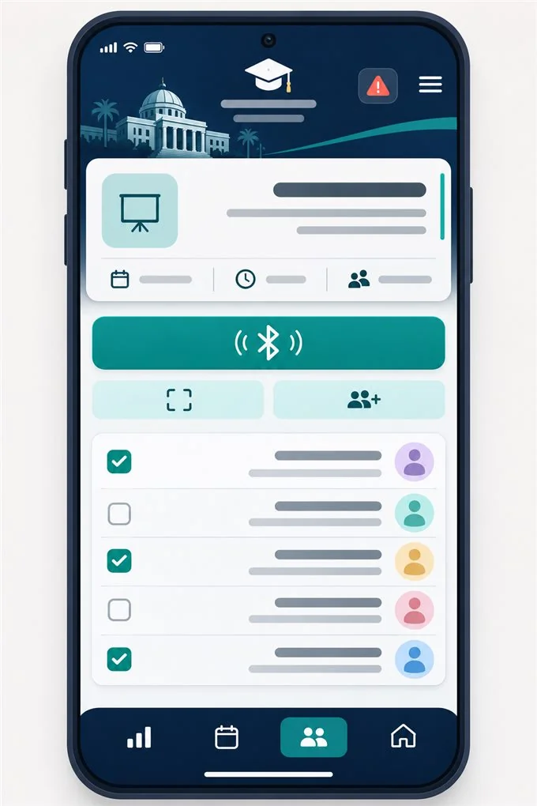

تشغيل مؤسسي واسع النطاق • الحوكمة الأكاديمية
منظومة الحضور والحوكمة الأكاديمية — كلية الطب بجامعة الزقازيق
التحدي المؤسسي:
إدارة حضور وغياب أكثر من 8,200 طالب وطالبة موزعين على 34 قسمًا أكاديميًا وسريريًا بين المدرجات والمستشفيات الجامعية، وما يصاحب الكشوف الورقية من تأخر في رصد نسب الغياب وإصدار الإنذارات الأكاديمية.
الحل المنفذ من EMLENotes:
بناء وتشغيل منظومة حوكمة رقمية متكاملة تعمل عبر 5 قنوات رصد (Bluetooth، بطاقات NFC اللاتلامسية، استيراد جلسات Microsoft Teams، والقوائم الإلكترونية) مع تطبيقات مخصصة للطالب والمحاضر ولوحات قيادة لحظية للمنسقين وإدارة الكلية.
572,243
عملية حضور موثقة
8,242
طالب وطالبة
34
قسمًا أكاديميًا
+98%
دقة واعتماد إلكتروني
